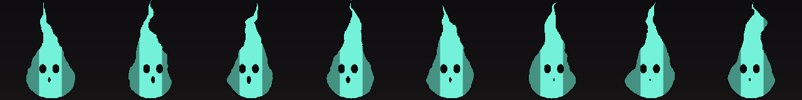

ENFLESHED / MOTION LIBRARY / 01
One language. Different forces.
The approved fireball beside a new Soul field. Compare shape, flow, and scale before building more variations.
1 grid square = 1 stud · figure = 5 studs
Full effect adds a casting cue and an ending around the approved wisp motion. Timing is for this art review.
Existing Soul artwork · keep and restyle
The current wisp already has the little-face motif. Keep its silhouette, timing, sigil, trail and burst assets as starting points; compare changes before replacing anything.

The 3D study tests rising motion and disappearance. It does not replace this existing artwork.
How the library covers the existing forms 8 forms · 5 construction families
| Construction family | Existing forms | What changes between forms |
|---|
Cast cues, impacts, dissipation, and mechanic accents remain shared layers around these families. A Soul source does not automatically add damage, healing, or summoning.